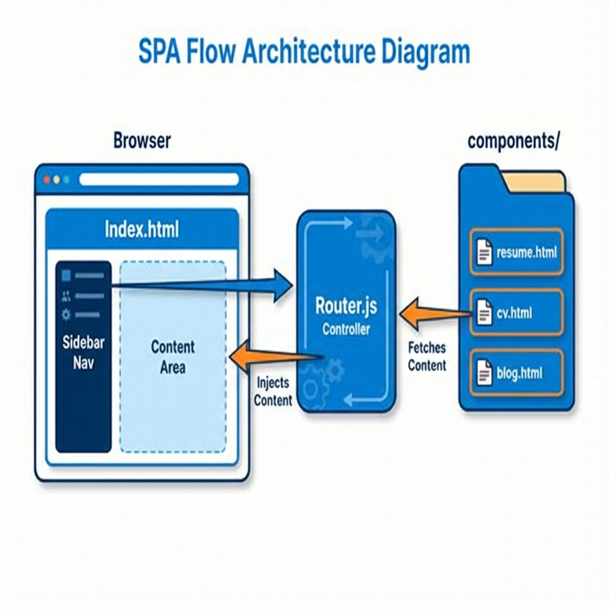
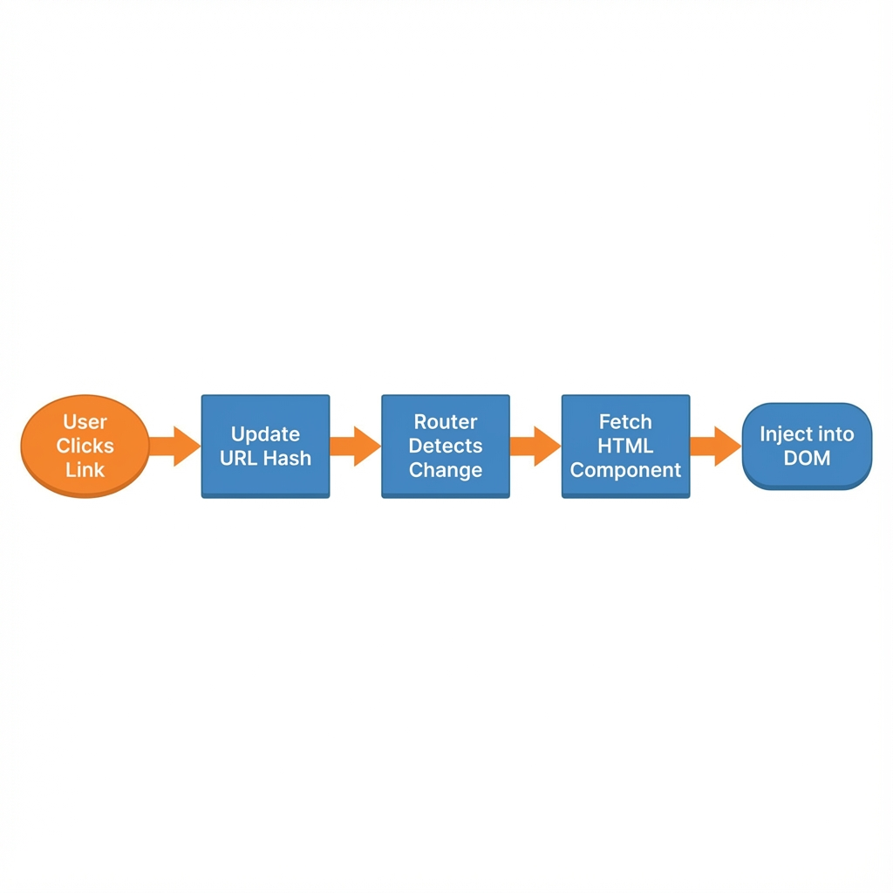

Web Architecture & Frontend Documentation
This website is a Single Page Application (SPA) built with vanilla HTML, CSS, and JavaScript. It does not rely on a backend framework (like React or Vue) or a server-side runtime. Instead, it simulates a dynamic application using a custom-built client-side router.
 Figure 1: High-Level Architecture Flow
Directory Structure
index.html: The main entry point. It contains the sidebar navigation (<nav>) and a<main id="content-area">container where pages are injected.assets/js/router.js: The core logic engine. It handles navigation clicks, fetches HTML content, and updates the view without reloading the page.components/: Contains HTML fragments for each "page" (e.g.,resume.html,cv.html,projects.html). These are partials, not full HTML documents.assets/css/style.css: Global styles for the sidebar, layout, and responsiveness.
The Router (router.js)
The router.js file is the heart of the SPA behavior. It intercepts navigation actions and orchestrates the content loading process.
 Figure 2: Router Decision Logic
1. Route Definitions
Routes are defined as a mapping of page names to a list of HTML components to load. This simple map allows us to compose pages from multiple reusable parts.
const routes = {
'home': ['components/resume.html', 'components/downloads.html'],
'cv': ['components/cv.html', 'components/downloads.html'],
// ...
};
Note how downloads.html is reused across multiple pages.
2. Loading Pages (loadPage)
When a user clicks a nav link, the following sequence occurs:
1. Event Capture: The loadPage(pageName) function is triggered.
2. Lookup: It looks up the list of components for that route in the routes object.
3. Fetch: It asynchronously fetches each HTML file using fetch(). A timestamp ?v=... is added to prevent aggressive browser caching during development.
4. Injection: It injects the fetched HTML into the #content-area, replacing the previous content.
3. Dynamic Download Links (updateDownloadLinks)
The website features an "Offline Access" section (components/downloads.html). Since this is a static file shared between the Resume and CV pages, the links (resume.pdf vs cv.pdf) must be updated dynamically based on context.
The function updateDownloadLinks(pageName) in router.js checks the active page and modifies the href attributes of the download buttons:
- Home/Resume Page: Links point to resume.pdf, resume.docx.
- CV Page: Links point to cv.pdf, cv.docx.
Running Locally
Because the router uses fetch(), you cannot open index.html directly from the file system (file://) due to CORS security policies. You must run a local server:
python -m http.server 8000
Then access the site at http://localhost:8000.